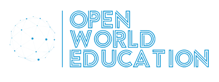
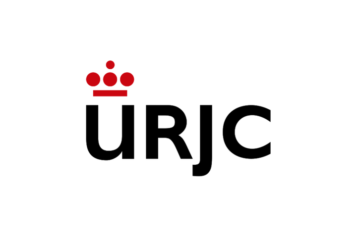

Journalist
working at the crossroads where
field reporting, strategic communication, and public-impact work meet.
Journalist
working
at
the crossroads
where
field reporting,
strategic communication
and public impact
work meet.
Carlos Bernal
+5 years in field reporting
+2 years in the third sector
+2 years in strategic communication
+1 year in the publishing industry
Trilingual in Spanish, English and French
Graphic design and web development
Master in corporate communication and public affairs
Master in political management
+5 years in field reporting
+2 years in the third sector
+2 years in strategic communication
+1 year in the publishing industry
Trilingual in Spanish, English and French
Graphic design and web development
Master in corporate communication and public affairs
Master in political management
Archive
El Comercio
Weber Shandwick
Cultur'All
French Ministry
La Voz
Academic work
Brumaria
NGO
Static world map
A clean grey world map with selected countries highlighted as an editorial transition section.
TAP USA
Date: 2025
Role: Master's Programme Student
Organization: The George Washington University
Graduate School of Political Management
Date: 2009
Role: International Academic Year
Organization: St. Mary's Springs High School,
Fond du Lac, Wisconsin, USA
TAP PORTUGAL
Date: June-September 2015
Role: Sociocultural Project Coordinator
Organization: CEMEA, supported by the French
Ministry of National Education
TAP SPAIN
Date: 2026 (in progress)
Role: Journalist
Organization: La Voz del Trubia
Date: 2025
Role: Corporate Communication
Consultant
Organization: Weber Shandwick
Date: 2024/25
Role: Corporate Comm &
Public Affairs - Master
Organization: Universidad de Navarra
Date: 2021-2024
Role: Journalist
Organization: El Comercio
Date: 2020
Role: Graphic Design &
Web Development
Organization: Trazos Escuela
de Arte Digital
Date: 2014
Role: Editorial Assistant
Organization: Editorial Brumaria
Madrid
Date: 2013
Role: Film and TV
Screenwriting Programme
Organization: La Factoría del Guion
Madrid
TAP FRANCE
Date: 2016-2018
Role: Assistant Content Manager
Organization: Cultur'All Studio
Audiovisual Production, Lille
Date: 2015
Role: Project Manager
Organization: Centre Social La Busette
Lille
Date: 2015
Role: BPJEPS Loisirs Tous Publics
Scholarship
Organization: French Ministry of Education
CEMEA
TAP IRELAND
Date: 2011/2012
Role: Linguistic Exchange Coordinator
Organization: Open World Education
Madrid / Dublin
TAP BELGIUM
Date: November 2024
Role: Engaging Europe Programme Participant
Organization: University of Navarra - MCPC, Brussels
TAP DENMARK
Date: 2012-2013
Role: Erasmus Exchange Student
Organization: Roskilde University
TAP ECUADOR
Date: January-March 2026
Role: Digital Content Specialist / Volunteer
Organization: Achuar community-based project
TAP PERU
Date: March-May 2026
Role: Digital Content Specialist / Volunteer
Organization: ONG Hilo Rojo, Trujillo
An international path shaped across
Spanish, French, and English-speaking environments.
01-06-2026 / present
La Voz del Trubia
Madrid correspondent: local journalism, interviews and field reporting.
Journalism archive
15-01-2026 / 15-05-2026
ONG Hilo Rojo
Education volunteer and digital content assistant in Trujillo, Peru.
Third sector / Peru
15-01-2025 / 15-03-2025
School of Political Management
The George Washington University. Political management and public affairs learning.
International training
01-04-2025 / 30-11-2025
Weber Shandwick
Corporate communication consulting in Madrid: monitoring, plans, content and public affairs support.
Agency / corporate PR
01-09-2024 / 30-06-2025
Corporate Communication
Universidad de Navarra master: political communication, public affairs, institutional and crisis communication.
Master
01-09-2021 / 15-12-2023
El Comercio
Reporter and editor in Asturias across field reporting, interviews, local beats and video.
+5 years in field reporting
01-09-2020 / 30-06-2021
Graphic Design and Motion Graphics
Trazos. Web development, digital design, web structure and visual production.
Digital skills
30-09-2018 / 21-12-2019
Editorial Brumaria
Editorial project support in Madrid, bridging art publishing, production and cultural context.
Publishing industry
01-09-2016 / 30-08-2018
Cultur'All Studio
Content, publishing and cultural communication in Lille, France.
Culture / editorial content
01-09-2015 / 30-08-2016
Centre Social La Busette
Project management and community work in Lille.
Third sector
01-09-2015 / 30-06-2016
BPJEPS / socio-cultural coordination
French Ministry of Education and CEMEA. Training in youth work and cultural projects.
Education / France
15-09-2013 / 15-06-2014
Film and TV Screenwriting
La Factoría del Guion. Structure, scenes, dialogue and narrative rhythm.
Creative writing
06-07-2011 / 06-07-2012

Open World Education
Coordination of language exchanges across Dublin and Madrid.
Education / languages
01-09-2010 / 30-06-2015

Journalism and
Double degree at Universidad Rey Juan Carlos: journalism, audiovisual communication and public opinion.
Academic foundation